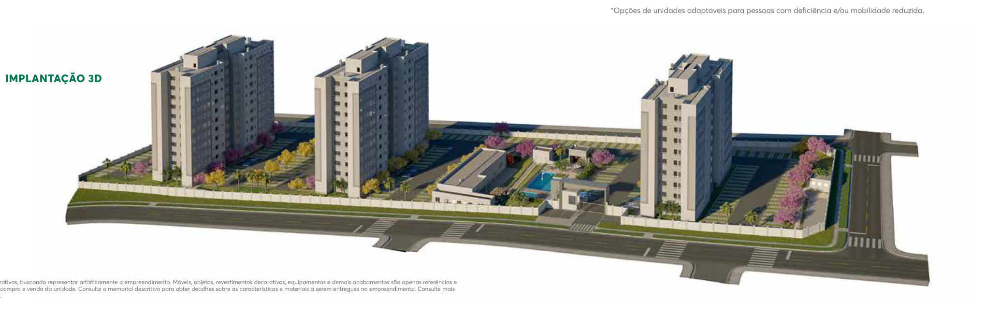

O contorno amarelo indica apenas o pavimento estimado pelo número do apartamento. Não identifica a fachada ou posição exata da unidade. Nenhuma cor significa disponibilidade.
Limites desta reconstrução
Implantação relativa de três torres, volumes escalonados e paleta clara/cinza baseados no folder público MRV, páginas 22 e 23. Proporções, fachadas, lazer, alturas e terreno foram aproximados visualmente, sem pranchas cotadas. Não representa o acabamento contratado, posição exata de uma unidade ou sombra técnica. Consulte o memorial e o sistema MRV.
Sem cálculo de insolação por unidade. O estudo regional do sol fica separado, na página de referências, para não apresentar sombras não verificadas como exatas.
Conferir com a referência oficial

Valores de referência da planilha de 26/10/2026. Existir na tabela não comprova estoque atual. Pré-proposta não é reserva nem aprovação de crédito. Previsão de entrega informada em 04/11/2026: 2º semestre de 2027, sujeita a confirmação MRV.